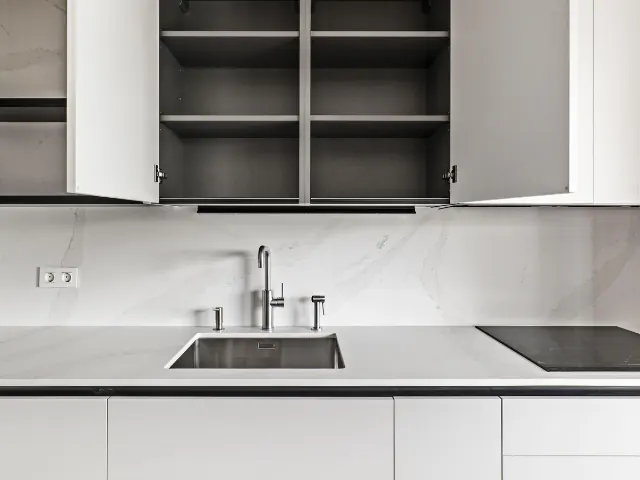

Partnerbijdrage
De elegantie van minimalistische keukenontwerpen
Gepubliceerd op 25 december 2025

Ben je op zoek naar een keuken die zowel stijlvol als functioneel is? Dan is een minimalistisch keukenontwerp misschien precies wat je nodig hebt. In dit artikel duiken we in de wereld van minimalistische keukens, met een speciale focus op de greeploze keuken. Deze trend verovert de harten van veel Nijmegenaren en dat is niet zonder reden. Laten we ontdekken waarom deze stijl zo populair is en hoe je het kunt integreren in je eigen huis.
Wat is een greeploze keuken?
Een greeploze keuken is, zoals de naam al doet vermoeden, een keuken zonder zichtbare handgrepen. Dit zorgt voor een strakke, naadloze uitstraling die perfect past binnen een modern interieur. De deuren en laden worden geopend door middel van een push-to-open systeem of subtiele uitsparingen aan de boven- of zijkant. Het resultaat? Een keuken die er altijd opgeruimd en elegant uitziet.
De voordelen van een greeploze keuken
- Minimalistische look: Een van de grootste voordelen van een greeploze keuken is de minimalistische uitstraling. Zonder zichtbare handgrepen oogt de keuken rustig en opgeruimd.
- Gemakkelijk schoon te houden: Geen handgrepen betekent minder plekken waar vuil en vet zich kunnen ophopen. Dit maakt het schoonmaken een stuk eenvoudiger.
- Innovatieve technologie: Veel greeploze keukens maken gebruik van geavanceerde technologieën zoals push-to-open systemen, wat niet alleen praktisch is, maar ook een vleugje luxe toevoegt.
- Duurzaamheid: Steeds meer greeploze keukens worden gemaakt van duurzame materialen, wat goed is voor zowel je huis als het milieu.
Trends in greeploze keukens
De populariteit van greeploze keukens blijft groeien, en daarmee komen ook nieuwe trends en innovaties. Hier zijn een paar trends die je in de gaten moet houden:
Strakke lijnen
De focus ligt op strakke, rechte lijnen die een gevoel van ruimte en orde creëren. Dit zorgt voor een visueel rustige omgeving, wat perfect past binnen de minimalistische esthetiek.
Matte afwerkingen
Glanzende oppervlakken maken plaats voor matte afwerkingen die een subtiele, elegante look geven. Mat geeft een verfijnde uitstraling en is minder gevoelig voor vingerafdrukken en vlekken.
Natuurlijke materialen
Denk aan hout, steen en andere natuurlijke materialen die een warme en uitnodigende sfeer creëren. Deze materialen voegen textuur en diepte toe aan je keuken, zonder afbreuk te doen aan de minimalistische uitstraling.
Kleurenpalet
Neutrale kleuren zoals wit, grijs en zwart blijven populair, maar ook gedurfde kleuren zoals donkergroen en diepblauw winnen terrein. Deze kleuren kunnen een statement maken zonder de rust en eenvoud van het ontwerp te verstoren.

Hoe integreer je een greeploze keuken in je huis?
Het integreren van een greeploze keuken in je huis is eenvoudiger dan je misschien denkt. Hier zijn een paar tips om je op weg te helpen:
Kies voor push-to-open systemen
Een van de meest kenmerkende elementen van een greeploze keuken is het gebruik van push-to-open systemen. Deze technologie maakt het mogelijk om deuren en laden te openen met een lichte druk, waardoor handgrepen overbodig worden.
Gebruik subtiele uitsparingen
Als je geen fan bent van push-to-open systemen, kun je ook kiezen voor subtiele uitsparingen aan de boven- of zijkant van de deuren en laden. Deze uitsparingen zijn bijna onzichtbaar maar bieden toch voldoende grip om de deuren en laden gemakkelijk te openen.
Werk met contrasterende materialen
Om je greeploze keuken echt tot leven te brengen, kun je werken met contrasterende materialen. Denk aan een combinatie van matte en glanzende oppervlakken, of een mix van natuurlijke en industriële materialen. Dit voegt visuele interesse toe zonder de minimalistische esthetiek te verstoren.
Denk aan de verlichting
Verlichting speelt een cruciale rol in het benadrukken van de strakke lijnen en naadloze afwerkingen van een greeploze keuken. Overweeg inbouwspots of led-strips onder de kasten om een subtiele, maar effectieve verlichting te creëren.
Conclusie
Een greeploze keuken is meer dan alleen een trend; het is een investering in stijl, functionaliteit en duurzaamheid. Of je nu een nieuw huis bouwt of je huidige keuken wilt renoveren, een greeploze keuken kan je ruimte transformeren en een moderne, minimalistische uitstraling geven. Dus, ben je klaar om je keuken naar een hoger niveau te tillen? Overweeg dan zeker een greeploze keuken en geniet van de vele voordelen die deze stijl te bieden heeft.
Veel succes met je keukenproject!
Terug naar de beginpagina